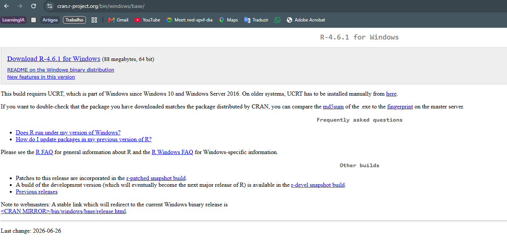
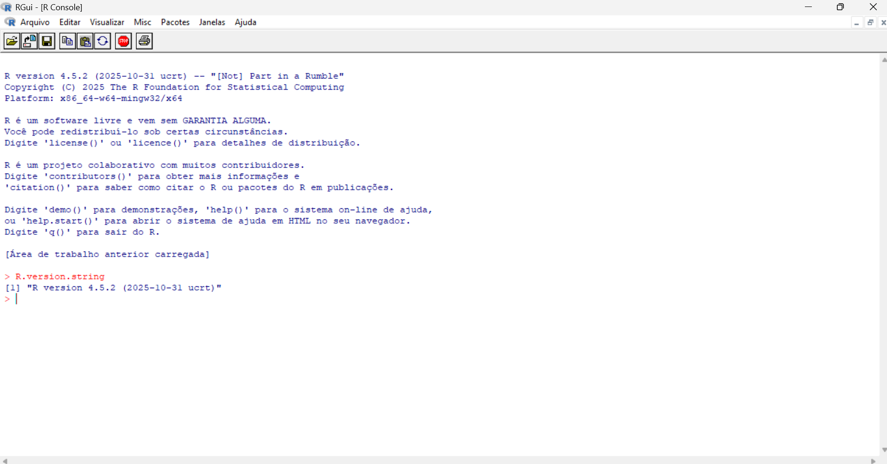
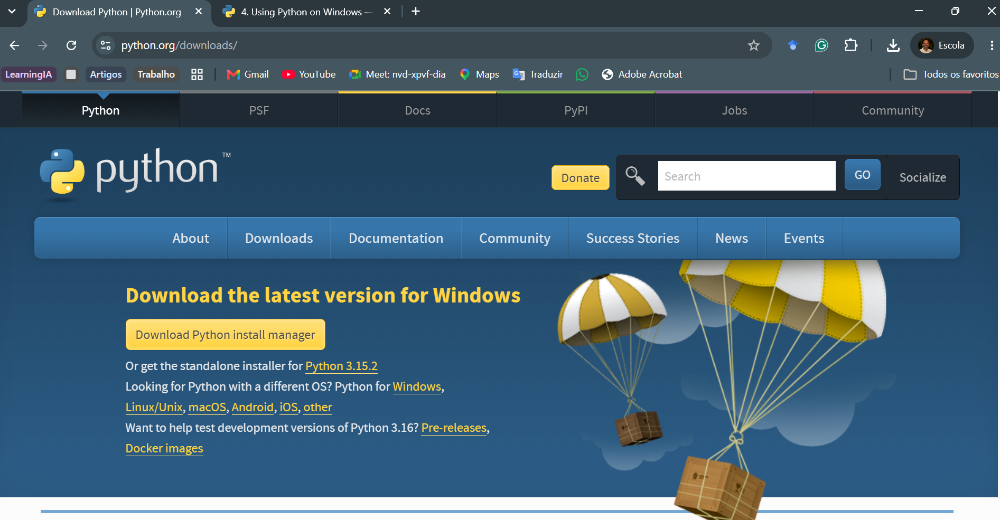
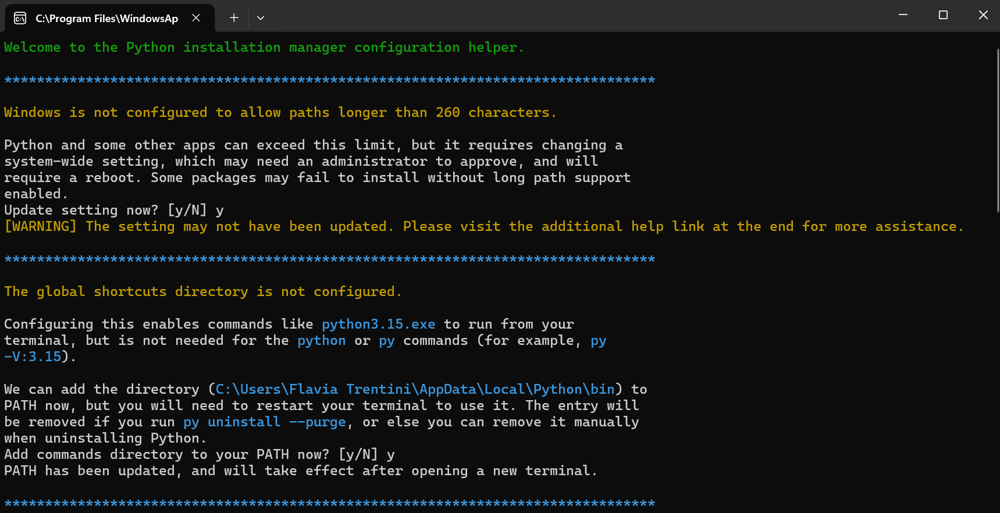
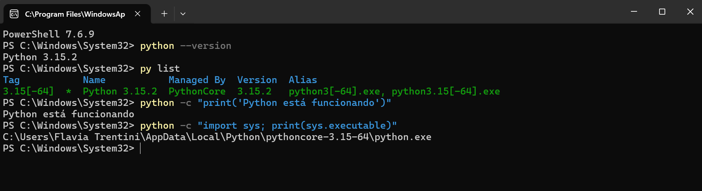

6 R e Python: linguagens do ambiente de pesquisa
Instalação e verificação no Windows
6.1 Introdução
R e Python são linguagens de programação que podem participar de diferentes etapas da pesquisa jurimétrica. Elas permitem registrar procedimentos em código, executar operações de forma consistente e repetir o trabalho quando os documentos, os dados ou as decisões metodológicas são atualizados.
As duas linguagens não exercem necessariamente a mesma função. R foi desenvolvido como uma linguagem e um ambiente para computação estatística e produção de gráficos. Python é uma linguagem de uso geral, utilizada em tarefas que incluem automação, coleta, processamento de textos e análise de dados. Em um mesmo projeto, cada linguagem pode ser empregada nas tarefas para as quais oferece recursos adequados.
Este capítulo apresenta as duas linguagens, orienta sua instalação no Windows e mostra como verificar seu funcionamento. O objetivo ainda não é ensinar programação. Antes de escrever análises, precisamos confirmar que o sistema consegue executar cada linguagem.
Ao final deste capítulo, você deverá ser capaz de:
- explicar as funções gerais de R e Python na pesquisa jurimétrica;
- compreender por que as duas linguagens podem coexistir no mesmo projeto;
- instalar R e Python no Windows a partir das fontes oficiais;
- identificar as versões instaladas;
- realizar um teste mínimo em cada linguagem.
6.2 Duas linguagens no mesmo ambiente
Uma linguagem de programação estabelece regras para expressar instruções que serão executadas pelo computador. O código pode importar dados, transformar variáveis, extrair informações, produzir tabelas ou estimar modelos. Como essas instruções ficam registradas em arquivos, elas podem ser examinadas e executadas novamente.
R e Python possuem comunidades, bibliotecas e formas de organização próprias. A utilização conjunta não exige que uma mesma tarefa seja repetida nas duas linguagens. A divisão deve responder às necessidades da pesquisa e permanecer clara para quem examina o projeto.
| Linguagem | Ênfase no ambiente de pesquisa | Exemplos de utilização |
|---|---|---|
| R | estatística, organização, análise e visualização de dados | transformar bases, produzir gráficos, estimar modelos e elaborar resultados |
| Python | automação, processamento de arquivos e uso geral | coletar documentos, extrair informações, processar textos e automatizar tarefas |
Essa distinção é apenas uma orientação. R também pode automatizar tarefas e processar textos; Python também possui bibliotecas estatísticas e gráficas. A escolha depende do problema, das bibliotecas disponíveis, do conhecimento da equipe e da forma como o projeto será mantido.
6.3 R: linguagem para dados e estatística
6.3.1 O que é o R?
R é uma linguagem e um ambiente para computação estatística, análise de dados e produção de gráficos. É um software livre, disponível para Windows, macOS e diferentes sistemas baseados em Unix. Sua funcionalidade pode ser ampliada por meio de pacotes. Essas características constam da apresentação oficial do Projeto R.
Na pesquisa jurimétrica, R pode ser utilizado para organizar informações extraídas de processos, decisões e outros documentos jurídicos; verificar e transformar bases de dados; produzir tabelas, gráficos e mapas; descrever fenômenos jurídicos e sociais; e estimar modelos estatísticos.
O trabalho é registrado em comandos, e não apenas em operações realizadas por meio de menus. Isso exige aprendizagem inicial, mas preserva a sequência das operações, facilita correções e permite repetir o procedimento quando a base é atualizada.
6.3.2 R básico e pacotes
A instalação do R contém funções para criar objetos, realizar cálculos, ler dados e executar análises. Outras funcionalidades são distribuídas em pacotes. Um pacote reúne funções, documentação e, em alguns casos, bases destinadas a determinado conjunto de tarefas.
Instalar e carregar são operações diferentes. install.packages() transfere o pacote para o computador e normalmente é utilizado uma vez para cada instalação do R. library() disponibiliza o pacote na sessão atual e precisa ser executado novamente em sessões posteriores.
# Instalação do pacote no computador
install.packages("dplyr")
# Carregamento na sessão atual
library(dplyr)Não precisamos instalar todos os pacotes no início. Eles serão acrescentados conforme as tarefas da pesquisa exigirem.
6.3.3 Instalação do R no Windows
O instalador oficial está disponível na página R for Windows, mantida pela rede CRAN. A página apresenta a versão estável atual e informa os requisitos do sistema.
Para realizar a instalação:
- acesse a página oficial;
- selecione o link de download da versão estável para Windows;
- execute o arquivo baixado;
- selecione o idioma do instalador;
- mantenha o diretório e os componentes sugeridos, salvo se houver uma orientação institucional diferente;
- conclua o procedimento;
- feche e reabra terminais e programas que já estavam em execução.
O número da versão e algumas telas podem mudar. O procedimento deve ser realizado sempre a partir da página oficial, sem procurar instaladores em sites de terceiros.

6.3.4 Atualização de uma instalação existente
Quem já possui R deve começar verificando a versão instalada:
R.version.stringCompare o resultado com a versão estável indicada na página R for Windows. Se houver uma versão mais recente, a atualização pode ser testada sem remover imediatamente a versão anterior:
- feche R e outros programas que estejam utilizando a linguagem;
- baixe o instalador atual na página oficial;
- execute a instalação normalmente, mantendo temporariamente a versão anterior;
- abra a versão nova de R pelo menu Iniciar;
- no console, execute
R.version.stringpara confirmar a versão em uso; - verifique a biblioteca ativa e teste o carregamento de um pacote já utilizado;
- remova a versão anterior somente depois de confirmar que R e os pacotes necessários funcionam com a versão nova.
Para verificar a biblioteca que está sendo utilizada, execute no console:
.libPaths()Em seguida, verifique se um pacote já conhecido está disponível. Como dplyr foi utilizado anteriormente para explicar a diferença entre instalar e carregar um pacote, ele pode servir para esse teste:
"dplyr" %in% rownames(installed.packages())Se o resultado for TRUE, carregue o pacote e consulte sua versão:
library(dplyr)
packageVersion("dplyr")Se o pacote for carregado sem erro, a versão nova de R está acessando essa biblioteca normalmente. Se o resultado for FALSE, isso não significa que a instalação de R falhou. Significa apenas que dplyr não está disponível na biblioteca ativa. Nesse caso, instale o pacote somente se ele for necessário:
install.packages("dplyr")A atualização de R e a atualização dos pacotes são operações diferentes. Não copie indiscriminadamente a biblioteca da versão anterior e não atualize todos os pacotes como etapa automática. Primeiro verifique a versão, a biblioteca ativa e os pacotes efetivamente necessários.
6.3.4.1 Reinstalação dos pacotes da versão anterior
Quando a versão nova não apresenta os pacotes utilizados anteriormente, podemos criar uma lista na instalação antiga e reinstalá-los a partir das fontes atuais. Esse procedimento evita copiar arquivos compilados para outra versão de R.
Primeiro, abra a versão anterior de R pelo menu Iniciar. Confirme que ela está ativa:
R.version.stringEm seguida, identifique os pacotes adicionais instalados e grave seus nomes em um arquivo na pasta do usuário:
pacotes_instalados <- as.data.frame(installed.packages())
meus_pacotes <- pacotes_instalados$Package[
is.na(pacotes_instalados$Priority)
]
arquivo_pacotes <- file.path(
path.expand("~"),
"pacotes-versao-anterior.txt"
)
writeLines(
sort(unique(meus_pacotes)),
arquivo_pacotes
)
arquivo_pacotesO último comando informa onde a lista foi salva. Depois, feche a versão anterior e abra a versão nova de R. Confirme novamente a versão:
R.version.stringNa versão nova, leia o arquivo, identifique os pacotes ausentes e instale as versões atualmente disponíveis:
arquivo_pacotes <- file.path(
path.expand("~"),
"pacotes-versao-anterior.txt"
)
meus_pacotes <- readLines(arquivo_pacotes)
pacotes_disponiveis <- rownames(installed.packages())
pacotes_faltantes <- setdiff(
meus_pacotes,
pacotes_disponiveis
)
if (length(pacotes_faltantes) > 0) {
install.packages(pacotes_faltantes)
}Durante a instalação, R pode informar que a biblioteca localizada em C:/Program Files/R/.../library não permite gravação e perguntar se deve utilizar uma biblioteca pessoal. Essa mensagem é esperada, pois a pasta Program Files é protegida pelo Windows.
Responda Sim para criar ou utilizar a biblioteca pessoal. Os pacotes serão instalados em uma pasta pertencente ao usuário, sem necessidade de executar R como administrador. Depois da instalação, os caminhos ativos podem ser conferidos com:
.libPaths()O primeiro caminho deverá apontar para a biblioteca pessoal da versão atual de R. A biblioteca do sistema continuará aparecendo entre os demais caminhos e fornecerá os pacotes que acompanham a instalação.
Esse procedimento reinstala os pacotes a partir do CRAN e utiliza versões compatíveis com a instalação nova de R. Ao final, um pacote utilizado pela pesquisa pode ser testado:
library(dplyr)
packageVersion("dplyr")Pacotes obtidos de outras fontes, como Bioconductor ou GitHub, podem não ser reinstalados por install.packages(). Se algum nome for indicado como indisponível, identifique sua fonte original e utilize o respectivo procedimento de instalação. Mantenha a versão anterior de R até confirmar que os pacotes necessários funcionam na versão nova.
A coexistência temporária de duas versões permite retornar à configuração anterior se R ou algum pacote necessário não funcionar como esperado. Depois dessa verificação, a instalação antiga poderá ser removida pelo Windows.
6.3.5 Verificação do R
Abra o R pelo menu Iniciar. No console, execute:
R.version.stringO resultado informa a versão utilizada pela sessão. Em seguida, execute um teste mínimo:
mensagem <- "R está funcionando"
print(mensagem)
6.3.6 Quando o R não é localizado
No Windows, a instalação oficial não adiciona R ao PATH por padrão. Por isso, R pode abrir normalmente pelo menu Iniciar e ainda assim não ser encontrado por outra ferramenta. Essa situação não significa necessariamente que a instalação falhou.
Somente nesse caso é útil abrir R e executar R.home(). O comando informa a pasta da instalação que está funcionando. Em seguida, feche e abra novamente o programa que não reconheceu R. No capítulo seguinte, mostraremos como selecionar essa instalação no Positron quando a detecção automática não funcionar.
Depois de uma atualização, um programa pode continuar procurando uma versão anterior. Antes de reinstalar R, compare a versão mencionada na mensagem de erro com R.version.string. A indicação manual da pasta será necessária apenas se a detecção automática continuar falhando.
6.4 Python: linguagem de uso geral
6.4.1 O que é Python?
Python é uma linguagem de programação de uso geral. Na pesquisa jurimétrica, pode apoiar a coleta de arquivos, a comunicação com serviços, a extração de informações, o processamento de textos, a automação de tarefas e a análise de dados.
Sua funcionalidade também pode ser ampliada por pacotes. Como projetos diferentes podem depender de versões distintas desses pacotes, é recomendável isolar as dependências de cada trabalho. A criação desse ambiente será apresentada no capítulo seguinte, depois da introdução ao Positron e à organização da pasta do projeto.
6.4.2 Instalação do Python no Windows
As instruções atuais estão na documentação oficial Using Python on Windows. O método recomendado utiliza o Python Install Manager, que pode ser obtido pelo site oficial ou pela Microsoft Store.

A Figura 6.3 mostra a página utilizada para obter o instalador.
Para realizar a instalação:
- acesse python.org/downloads e selecione a opção indicada para Windows;
- abra o arquivo baixado com dois cliques;
- autorize a execução quando o Windows solicitar confirmação;
- selecione a opção de instalação e mantenha as opções recomendadas;
- aceite a inclusão dos comandos no
PATHquando essa opção for apresentada; - aguarde a confirmação de que a instalação foi concluída.
Essas etapas são realizadas nas janelas do instalador. Não é necessário abrir o terminal durante essa sequência. O terminal será utilizado depois da instalação para verificar se os comandos estão disponíveis.
O formato das telas pode variar conforme o arquivo oferecido pelo site oficial. A instalação atual pode utilizar o Python Install Manager, que administra as versões instaladas. O comando py permite consultar essas versões e reduz a necessidade de localizar manualmente cada interpretador.

Durante a configuração, o gerenciador pode consultar se o Windows deve permitir caminhos longos e se o diretório global de comandos deve ser incluído no PATH. A Figura 6.4 registra essas duas solicitações. Depois de alterar o PATH, feche e abra novamente o terminal para que a configuração seja reconhecida.
6.4.3 Verificação do Python
Abra um novo terminal e execute:
python --versionPara listar os interpretadores conhecidos pelo gerenciador:
py listEm seguida, realize o teste mínimo:
python -c "print('Python está funcionando')"Para identificar o executável utilizado:
python -c "import sys; print(sys.executable)"O último comando é importante quando existem diversas instalações. Ele mostra qual interpretador respondeu ao comando python.

A Figura 6.5 mostra a verificação de uma instalação disponível no sistema. A versão utilizada pelo ambiente de um projeto pode ser diferente; sua seleção será apresentada no capítulo seguinte.
6.4.4 Quando Python não é localizado
Se python ou py não forem reconhecidos, feche e reabra o terminal e confira se o Python Install Manager foi concluído. Instalações antigas e alterações manuais no PATH também podem criar conflitos. Nessa situação, utilize py list para identificar as versões conhecidas e consulte a seção de solução de problemas da documentação oficial antes de modificar variáveis do sistema.
6.5 Como distribuir as tarefas
R e Python podem ser empregados no mesmo percurso sem duplicar cada procedimento. Uma organização possível é utilizar Python para automatizar a obtenção ou a extração de informações e R para estruturar a base, realizar análises estatísticas e produzir resultados. Outra pesquisa pode distribuir as tarefas de forma diferente.
O critério não deve ser a preferência abstrata por uma linguagem, mas a adequação ao problema e a possibilidade de manter o código. A escolha precisa considerar:
- a natureza da tarefa;
- as bibliotecas disponíveis;
- a experiência da equipe;
- a integração com os demais arquivos;
- a documentação das dependências;
- a possibilidade de reprodução do procedimento.
Nos capítulos seguintes, R e Python serão conectados ao Positron e aos documentos Quarto. Essa integração permitirá selecionar o interpretador adequado sem perder a unidade do projeto.
6.6 Síntese
R e Python são linguagens que podem exercer funções complementares na pesquisa jurimétrica. R oferece um ambiente voltado à computação estatística, à análise e à visualização de dados. Python é uma linguagem de uso geral que pode apoiar automação, coleta, extração de informações, processamento de textos e análise.
A instalação deve ser seguida por uma verificação simples. No Windows, R pode estar corretamente instalado sem estar disponível no PATH, e Python pode possuir diversos interpretadores. Reconhecer essas diferenças evita atribuir problemas de configuração ao código da pesquisa. A seleção dos interpretadores e a organização do ambiente de cada projeto serão tratadas no capítulo seguinte.